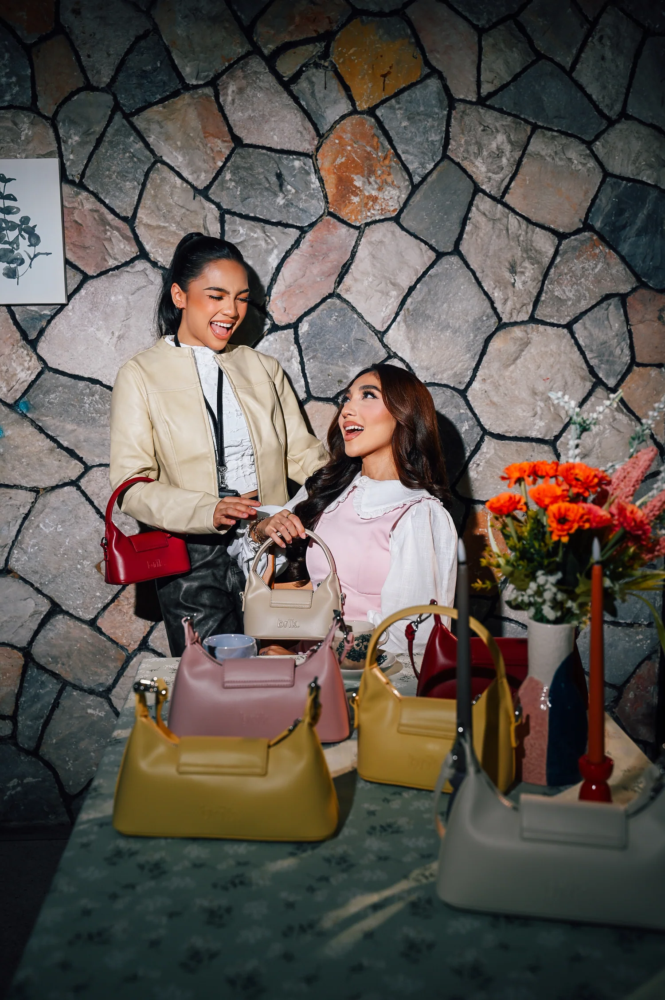
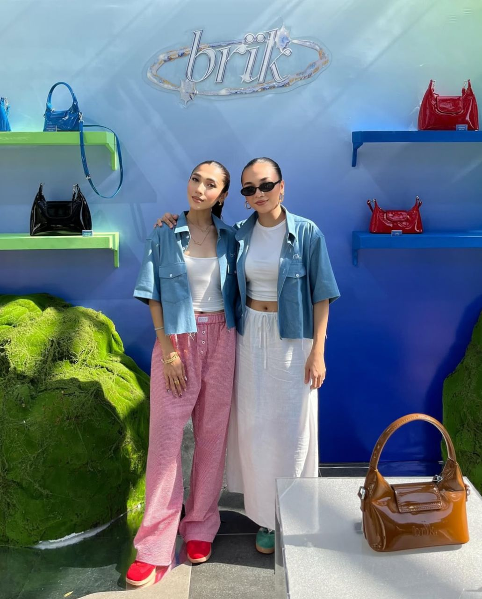

|  |
Behind brïkFounded in 2022, brïk was created with the belief that handbags should be more than just functional. Each piece is thoughtfully designed to tell a story and reflect the individuality of the person who carries it. What began as a small idea between two sisters has grown into a brand rooted in intention, timeless design, and meaningful connection. As brïk evolved, the brand became shaped by its community. Customer feedback and everyday inspiration guide each collection, with careful attention given to colours, materials, and details that balance elegance with practicality. Through thoughtful growth and curated releases, brïk continues to celebrate authenticity and personal expression. Every piece carries not only design, but the stories of those who choose to make it part of their everyday lives. Our Mission
Our Vision
|
The Heart Behind brïkbrïk was imagined and brought to life by two sisters, Zabrina and Kaira. From the beginning, the brand was shaped by personal experiences, shared values, and a desire to create handbags that feel both meaningful and refined. The name brïk reflects their identities. “Bri” represents Zabrina, while “K” is inspired by Kaira. Together, these elements form a name rooted in family, connection, and the vision they continue to build together. While the sisters share a similar mindset, their creative preferences differ. Zabrina is drawn to soft tones and subtle elegance, while Kaira gravitates towards bolder colours and expressive details. This contrast gives brïk its distinctive balance. brïk became a creative space where ideas could evolve freely. Each design, silhouette, and colour selection is thoughtfully considered to create bags that feel personal, functional, and timeless. Building brïk has strengthened the bond between Zabrina and Kaira. Their collaboration is reflected in every piece, with careful attention to detail, quality, and intention woven into the brand’s identity. Beyond the founders, brïk is created for the community who carries it. Each bag represents confidence, creativity, and individuality, becoming part of the everyday stories of those who wear it. At its heart, brïk represents connection, thoughtful design, and the joy of carrying something meaningful. Every piece is a bridge between inspiration, craftsmanship, and individuality, and the brand continues to grow alongside its community. At its core, brïk isn’t just theirs. It belongs to everyone who carries it. It’s yours to style, to experience, and to make your own. |

|
|  |
The Journey So Farbrïk began with a simple online launch, a small selection of thoughtfully designed pieces, and a great deal of hope. What we had at the start was modest, but it was driven by intention, care, and belief in the vision we were building. Slowly, people began to discover us. They connected with something that felt both comforting and refreshing. From our very first release, every collection has been shaped with purpose, each colour and design quietly contributing to a story that continues to grow. What started as a simple idea has evolved into something far greater than we ever imagined. With every new launch, we learned more about our craft, our community, and the direction we wanted brïk to take. Each message, every returning customer, and every shared moment has helped shape brïk into more than just a brand. It has become a reflection of the people who believe in it, support it, and carry it as part of their everyday lives. While brïk has found its place in many hearts, we remain grounded in the understanding that we are still growing. We are still learning, exploring, and discovering what is possible, and we value the process as much as the progress. This journey is one we cherish deeply, because it allows us to grow alongside the very people who support us. Every step forward is guided by reflection, intention, and a commitment to staying true to who we are. brïk continues to unfold, shaped by time, experience, and community. There is still so much to explore, and we embrace the journey with openness and curiosity. And perhaps that is the most beautiful part of all. The story is still being written, and we are grateful to share every chapter with you. |